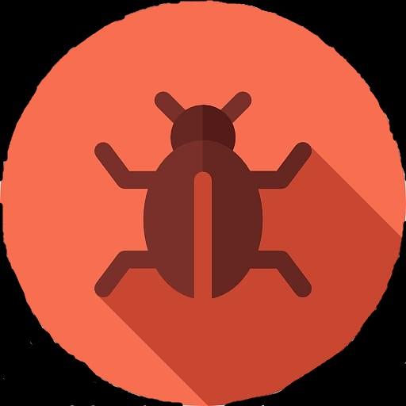

A virusok
1. Zsarolóvírus:
ez egy olyan típusú vírus, amely titkosítja a számítógépen lévő adatokat, zárolja azokat, majd fizetést követel a visszafejtési kulcsért.
2. Rosszindulatú program:
ez az általános kifejezés minden olyan szoftverre, amelyet arra terveztek, hogy kárt okozzon a számítógépben vagy annak adataiban. Ez magában foglalja többek között a vírusokat, férgeket és trójaiakat.
3. Férgek:
ezek olyan programok, amelyek replikálják magukat, és hálózaton keresztül más számítógépekre terjednek. Terjedésükhöz nincs szükség emberi beavatkozásra, és ezt gyorsan megtehetik.

4. Trójaiak:
ezek olyan vírusok, amelyek ártalmatlan szoftverként, például játékként vagy szoftver segédprogramként álcázzák magukat. Ezután becsapják a felhasználót, hogy futtassa őket, lehetővé téve a vírus számára, hogy hozzáférjen az áldozat számítógépéhez.
5. Kémprogram:
ez egy olyan program, amely információkat gyűjt a felhasználó számítógépen végzett tevékenységeiről a tudta vagy beleegyezése nélkül. Gyakran használják arra, hogy információkat gyűjtsenek a felhasználó böngészési szokásairól, jelszavairól és egyéb érzékeny adatairól hirdetési vagy egyéb célokra.

Sok más típusú számítógépes vírus is létezik, de ezek a fő típusok, amelyekkel találkozhat. Fontos tudni, hogyan védheti meg magát tőlük, és legyen óvatos a számítógépen letöltött és futtatott szoftverekkel.
Start Downloading